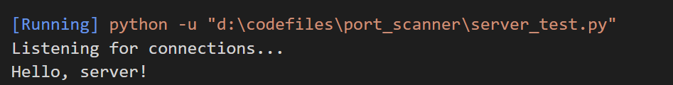
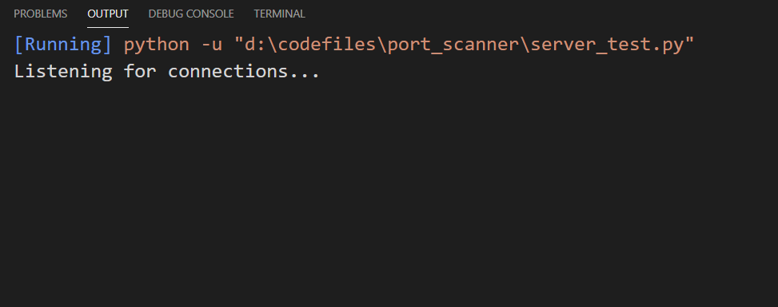
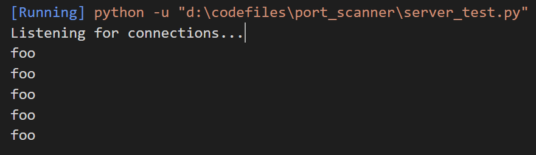

pychatbox : A Python Chat Application
Build a Python Chat Room Application!
Last month I found myself struggling while understanding python sockets. So I decided to make a project to understand it. After trying out basic examples and reading the docs, I got to making a chat application.
Here's the Github link for the repository : pychatbox
At first, I wanted to make it a simple terminal based application but after writing some code, it became clear that a terminal won't suffice. I switched to tkinter and ended up making a GUI for the app. Keep in mind, GUI became a necessity, which is a strange thing for me!
What new are you going to learn?
If you're a newbie like me, there's probably a lot to learn from this project. Here's a list of what you will learn:
Lot to learn! Let's get going!
Starting out with sockets
For learning the basics of sockets, you can read the docs, or look youtube videos. Basics are very thorughly explained in the internet and I'm going to do no good by reinventing the wheel! But for the sake of completeness, here's a simple server and client sockets code, that does nothing more than saying hello and closing connections.
Simple echo server
import socket
host = ''
port = 5555
with socket.socket(socket.AF_INET,socket.SOCK_STREAM) as server_sock:
server_sock.bind((host,port)) # bind to a host on some port
server_sock.listen() # listen for incoming connections
print("Listening for connections...")
conn, addr = server_sock.accept() # create a NEW socket object upon accepting connection with a specifie address
with conn:
conn.send(b"Welcome, client!") # send bytes-like data over the new socket object
dataRcvd = conn.recv(1024) # recieve data from the client
if not dataRcvd: # tricky part. If no data is recieved close the connection.
print("Connection closed by the client")
conn.close()
else:
print(dataRcvd.decode("utf-8")) # print the recieved message by decoding it to utf-8
conn.close()
Simple echo client
import socket
host = "" # Enter the host IP address here (IPv4)
port = 5555 # Anything above 1000 should work fine
with socket.socket(socket.AF_INET, socket.SOCK_STREAM) as client_socket:
client_socket.connect((host,port))
dataRcvd = client_socket.recv(1024)
if not dataRcvd:
print("Connection closed by the server")
client_socket.close()
else:
print(dataRcvd.decode("utf-8"))
client_socket.send(b"Hello, server!")
client_socket.close()
Here's how the server code runs.

Nice! Now we can go forward and do more complex things with sockets.
Is it hacker-proof?
If you've ever used Wireshark (A network traffic monitoring tool), you'll find out that these messages that we sent using the echo server travel plaintext over the network! This is unacceptable, and we should make our messaging more secure and tamper proof. To do this, we can use two ways of encryption:More workers = less work?
Yes, it does mean that work will be distributed, but the total work remains same.Let's thread everything to make it faster!
No! It doesn't work that way. Threading is an optimal solution when you are waiting for some work to finish, while you want to switch to another task. Some people complain about threading in Python to be "bad", but if you code as per the docs, you'll be fine. So again, threading is a nice idea in situations like putting marbles in a jar; more the workers, easier is the task.
An example of how threading can help
Let's bring back our echo server and make a few changes: let's make it listen for client messages endlessly, just like a normal server would do. Let's define a function 'foo' that'll print 'foo' 5 times and call it after running the while loop for listening for messages from the client.
def fooPrint():
for _ in range(5):
print("foo")
and modify the server code to run a while loop infinitely to recieve messages.
with conn:
try:
while True:
dataRcvd = conn.recv(1024) # recieve data from the client
if not dataRcvd: # tricky part. If no data is recieved close the connection.
print("Connection closed by the client")
conn.close()
else:
time.sleep(0.1)
except:
print("Connection closed by the client!")
fooPrint()
Now we will modify the client code to send messages using a while loop.
while True:
client_socket.send(b"Hello client!")
On running the server code, we see this output:
 But we can't see the 'foo' printed 5 times (or even a single time). This happens because the function is stuck in the while loop. So the 'main thread' is busy recieving messages and doesn't reach the foo function. To solve this issue, we can have an alternate thread handle the reception, while the main thread will continue as it should. We can modify the server code as follows:
def recvMessages(conn):
try:
while True:
dataRcvd = conn.recv(1024) # recieve data from the client
if not dataRcvd: # tricky part. If no data is recieved close the connection.
print("Connection closed by the client")
conn.close()
else:
time.sleep(0.1)
except:
print("Connection closed by the client!")
Now let's change the code to start a thread for recieving the messages
server_sock = socket.socket(socket.AF_INET,socket.SOCK_STREAM)
server_sock.setblocking(1)
server_sock.bind((host, port)) # bind to a host on some port
server_sock.listen() # listen for incoming connections
print("Listening for connections...")
conn, addr = server_sock.accept()
recvThread = Thread(target=recvMessages,args=(conn,)) # create a thread for the recieve function
recvThread.start() # start the thread
fooPrint()
recvThread.join() # once the recvMessage function returns, we'll release the thread's allocated sources
Now when we run this code, we can see that foo prints immediately.

Managing multiple threads at the same time
If you're looking to develop a program with multiple threads, it is recommended to manage a queue from
different threads and have the main thread read the queue every while.
Here's how this app manages multiple clients.

I'll keep updating this page...